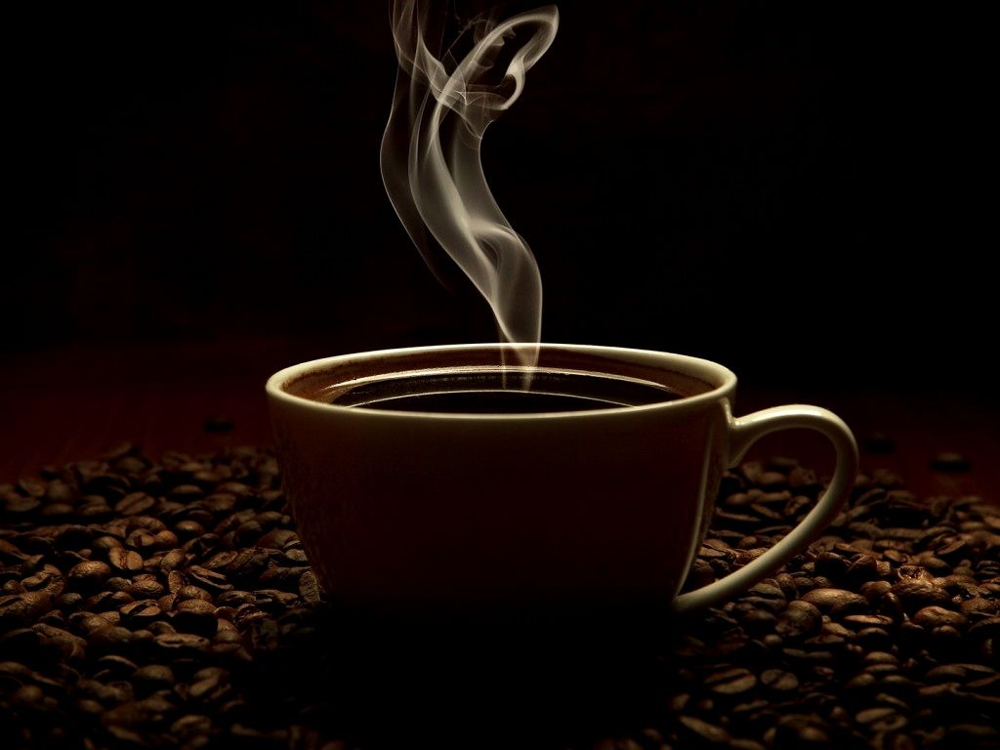
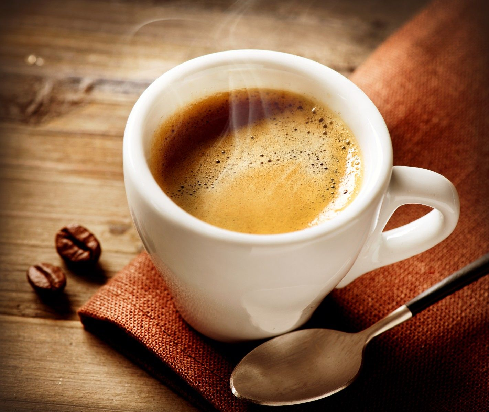
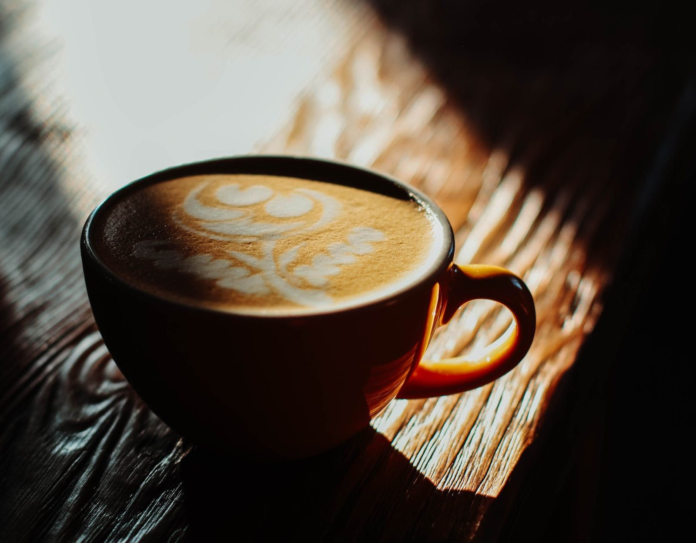
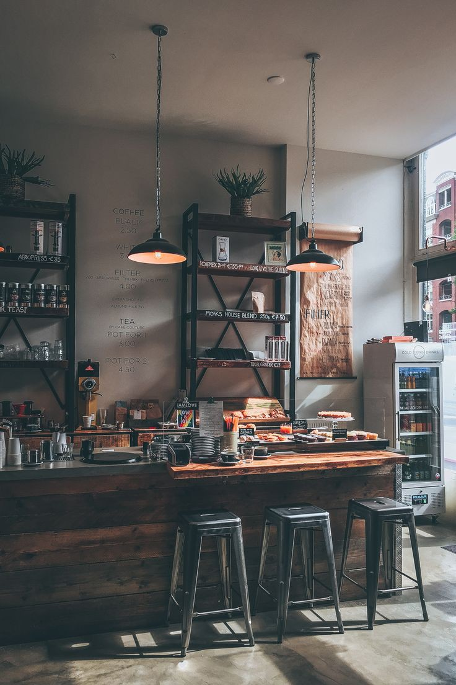
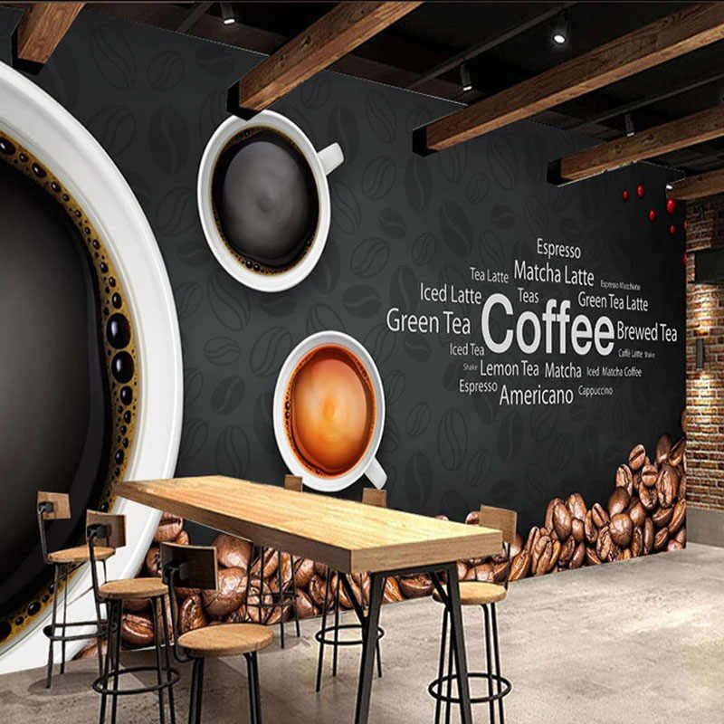
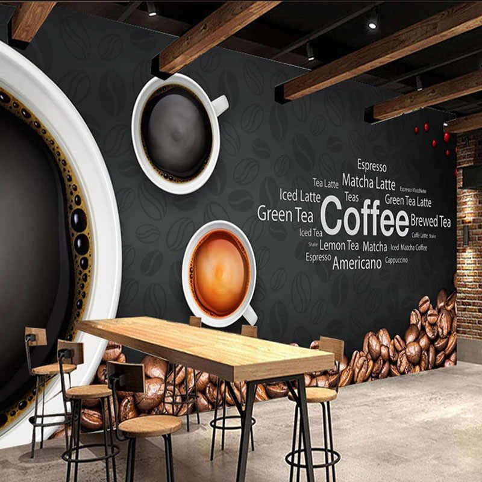

"Start your day
with a perfect cup of coffee,
crafted just for you."
"Indulge in our premium selection of ethically-sourced beans, expertly roasted to perfection. Our cozy coffee shop is the perfect place to relax, catch up with friends, or get some work done. Come for the coffee, stay for the ambiance and friendly service. We can't wait to serve you."
We provide a variety of high-quality coffee blends, carefully sourced from around the world and expertly roasted to bring out their unique flavors and aromas. Our skilled baristas take pride in crafting each cup of coffee to perfection, ensuring that every customer enjoys a rich and satisfying coffee experience. Whether you prefer a bold espresso, a smooth latte, or a classic drip coffee, we've got you covered. Come and indulge in our premium coffee selection, and see why we're known for serving the best coffee in town.
Our Special Coffee

Black Coffee
Black Coffee that is normally brewed without the addition of additives such as sugar, milk, cream, or added flavors.
$2.50
Buy Now

Espresso
Espresso is a concentrated coffee beverage that originated in Italy.It served in small, strong shots and is the base for many coffee drinks
$3.50
Buy Now

Cappuccino
Cappuccino is an espresso-based coffee drink that originated in Italy and is traditionally prepared with steamed milk foam.
$4.00
Buy Now

"Best Coffee House
in your Home Town"
We realise that it's not always possible to drop
in when you want to some coffee or a meal,
so we've introduced a home delivery service
offering our entire menu.

"Happiness
at the click of a button"
We provide a variety of high-quality coffee blends, carefully sourced from around the world /and expertly roasted to bring out their unique flavors and aromas. Our skilled baristas take pride in crafting each cup of coffee to perfection, ensuring that every customer enjoys a rich and satisfying coffee experience. Whether you prefer a bold espresso, a smooth latte, or a classic drip coffee, we've got you covered. Come and indulge in our premium coffee selection, and see why we're known for serving the best coffee in town.
Our Special Coffee
Black Coffee
Black Coffee that is normally brewed without the addition of additives such as sugar, milk, cream, or added flavors.
$2.50
Buy NowEspresso
Espresso is a concentrated coffee beverage that originated in Italy.It served in small, strong shots and is the base for many coffee drinks
$3.50
Buy NowCappuccino
Cappuccino is an espresso-based coffee drink that originated in Italy and is traditionally prepared with steamed milk foam.
$4.00
Buy Now"Best Coffee House
in your Home Town"
We realise that it's not always possible to drop
in when you want to some coffee or a meal,
so we've introduced a home delivery service
offering our entire menu.

"Happiness
at the click of a button"
We provide a variety of high-quality coffee blends, carefully sourced from around the world /and expertly roasted to bring out their unique flavors and aromas. Our skilled baristas take pride in crafting each cup of coffee to perfection, ensuring that every customer enjoys a rich and satisfying coffee experience. Whether you prefer a bold espresso, a smooth latte, or a classic drip coffee, we've got you covered. Come and indulge in our premium coffee selection, and see why we're known for serving the best coffee in town.
"Happiness
at the click of a button"
We provide a variety of high-quality coffee blends, carefully sourced from around the world /and expertly roasted to bring out their unique flavors and aromas. Our skilled baristas take pride in crafting each cup of coffee to perfection, ensuring that every customer enjoys a rich and satisfying coffee experience. Whether you prefer a bold espresso, a smooth latte, or a classic drip coffee, we've got you covered. Come and indulge in our premium coffee selection, and see why we're known for serving the best coffee in town.